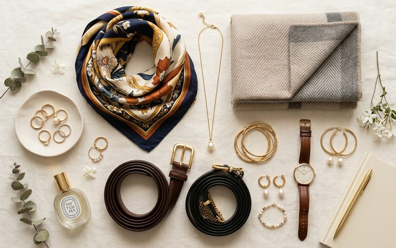

Os acessórios são a pontuação de um look: sem eles, as frases existem, mas ficam planas. Com eles, o mesmo conjunto de roupas pode contar histórias completamente diferentes. Um vestido preto sem acessórios é neutro e funcional. O mesmo vestido com um cinto de couro vintage na cintura, um colar chunky e uma bolsa estruturada se torna uma declaração de estilo. Essa alquimia é o que torna os acessórios de brechó tão especiais — eles carregam personalidade própria desde o primeiro uso.
No Brechó Outra Vez, os acessórios muitas vezes são os itens mais disputados. Há uma razão para isso: peças como cintos artesanais, joias de metal envelhecido, lenços de seda e bolsas de couro genuíno chegam ao brechó num estado que o mercado atual dificilmente replica pelo mesmo preço. A qualidade de um cinto de couro legítimo de trinta anos atrás é, em muitos casos, superior à de um produzido hoje.
Nenhum acessório muda a silhueta de um look com tanta eficiência quanto o cinto. Amarrado sobre um vestido solto, ele cria cintura onde não havia. Sobre um blazer oversized, ele define e contemporiza. Sobre uma calça de alfaiataria, ele acrescenta intenção e personalidade. No garimpo, procure cintos de couro genuíno — eles são reconhecíveis pela flexibilidade natural, pelo cheiro característico e pela espessura consistente da tira. Evite os de material sintético, que racham com o tempo.
O lenço é o acessório mais versátil que existe. Na cabeça como turbante, no pescoço como choker, amarrado na alça de uma bolsa, no pulso como pulseira, ou preso nos cabelos como faixa — cada forma de usar é um look diferente. Lenços de seda ou cetim de brechó frequentemente chegam em cores e estampas que não existem mais no mercado, com aquela qualidade de toque e caída que o material sintético não consegue imitar. Uma única peça dessas pode multiplicar as possibilidades de dezenas de looks no seu guarda-roupa.
As joias de brechó têm uma qualidade que as peças novas de bijuteria raramente possuem: a patina do tempo, que nenhum processo industrial consegue replicar com fidelidade. Um colar dourado envelhecido, um broche de esmalte dos anos 80, brincos de argola com textura artesanal — essas peças acrescentam profundidade visual a qualquer look. A regra não escrita do estilo diz que uma peça boa mas imperfeita tem mais charme do que dez peças novas e genéricas.
A arte de usar acessórios se aprende com a prática e com a observação. Comece com um de cada vez: adicione apenas um acessório marcante ao seu look habitual e observe como ele transforma o conjunto. Com o tempo, você desenvolve a intuição para saber quando um cinto resolve tudo, quando é a hora do lenço, e quando a melhor decisão é o minimalismo total. Essa intuição é a sua assinatura — e é exatamente o que o brechó ajuda a construir, uma descoberta de cada vez.